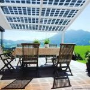

Arquitetura e Estacionamento
Quando se aproveitam espaços ociosos para se produzir energia todos ganham, Cada vez mais arquitetos buscam soluções sustentáveis para seus projetos e aproveitando em seus projetos a tecnologia fotovoltaica, podendo ser utilizado em diversos tipos de cobertura e para os mais variados fins, seja em fachadas, passeios, áreas de lazer, garagens e áreas de convivência. Porque não utilizar dos inúmeros tipos de materiais para fazer espaços cada vez mais modernos e ecológicos, quem disse que tecnologia não anda junto com ecologia.